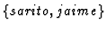
@matesco.unican.esAbstract
During the last years several results has been obtained on the univariate polynomial decomposition area. However, multivariate decomposition problem has not been studied so much.
Generalizing the concept of univariate decomposition by intermediate field theory, we could say that a multivariate polynomial
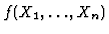
is decomposable if and only if there exists an intermediate field such that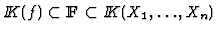
. Such field has the following form: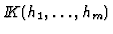
, so f can be decomposed as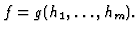
Therefore this problem is divided into two parts: the first one is the computation of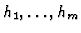
and afterwards, the computation of g given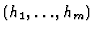
.
A complete solution to this problem seems to be more difficult than the decomposition for univariate rational functions. But even ``non-trivial" partial solutions would be an aid for algebraic simplification and evaluation questions. We study three different decomposition problems that appears in the literature. These problems comes out, when we set some restrictions over the field :
** is a 1-transcendental degree field. Therefore, there exist g(Y) and
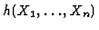
such that:
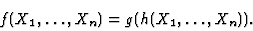
** is generated by non-constant polynomials of
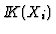
, for all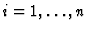
. Therefore, there exist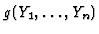
and univariate non-constant polynomials hi(Xi), such that:
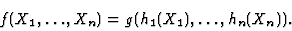
** There exist
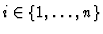
such that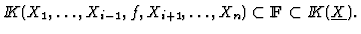
In this problem, there exist and such that
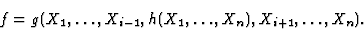